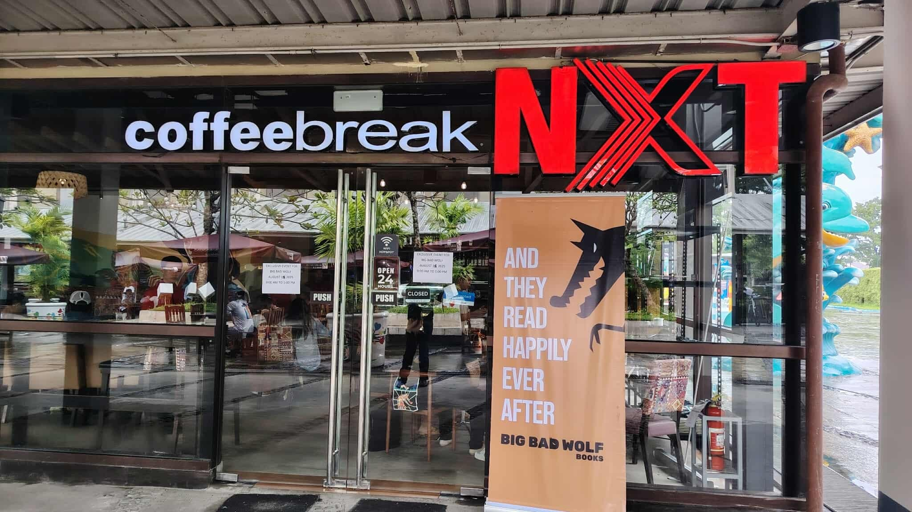
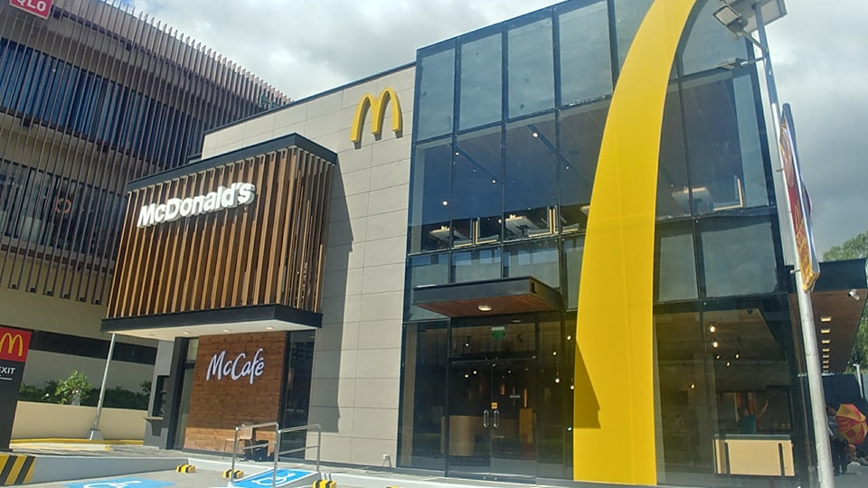

I am a coffee lover, and I love to spend quality time with my parents in a cafe. So, here are my favorite cafe's to go to

Coffee Break NXT in Robinson's Pavia opens in 24 hours! My family and I love to spend time here during weekends because we can enjoy our time here without any pressure.

The McDonald's Cafe in MegaWorld Iloilo has a calm ambiance, perfect for drinking coffee peacefully.

Starbucks has a relaxing vibe. I love the taste of their lattes and their cinnamon roll!
One thing that made me love cafes is the background music, because it doesn't just give a chill vibe, but it can also help me while studying at home. Here's a video of cafe music.
This page was inspired by Coffee Vibes Around the World.
Caffeine formula: C8H10N4O2
Water boils at 100°C = 373.15 K0